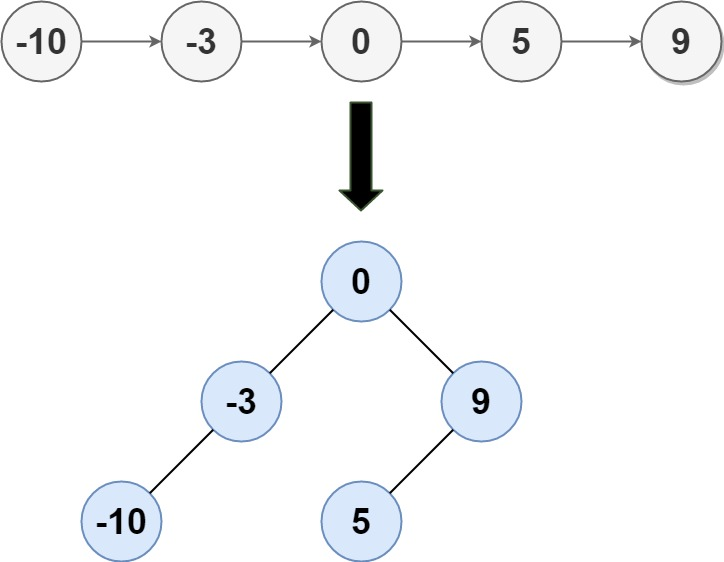

109. 有序链表转换二叉搜索树
快慢指针找中点作根，断开后左右两段递归；链表有序，中点即根，两段长度差 ≤ 1 保证平衡。
思路
- 链表已升序：取中点作根，左半段递归成左子树、右半段递归成右子树，两段长度差 ≤ 1，树自然平衡。
- 快指针一次走两格、慢指针一次一格：
fast到头时slow正好在中间（偏左）。 - 断开
prev.next再递归：左段从head进、右段从slow.next进；单结点直接作根（否则分不出两段）。
图解
最优解
1class Solution {2 public TreeNode sortedListToBST(ListNode head) {3 if (head == null) return null;4 // 单个结点直接作根：不先处理，快慢指针分不出左右两段5 if (head.next == null) return new TreeNode(head.val);6 7 // 快指针一次走两格、慢指针一次一格：fast 到头时 slow 在中点（偏左）8 ListNode prev = null, slow = head, fast = head;9 while (fast != null && fast.next != null) {10 prev = slow;11 slow = slow.next;12 fast = fast.next.next;13 }14 // 断开中点前的链：slow 作根，左右两段各自递归15 prev.next = null;16 TreeNode root = new TreeNode(slow.val);17 root.left = sortedListToBST(head);18 root.right = sortedListToBST(slow.next);19 return root;20 }21}题目
给定一个单链表的头节点 head ，其中的元素 按升序排序 ，将其转换为 平衡 二叉搜索树。
示例 1:

输入: head = [-10,-3,0,5,9] 输出: [0,-3,9,-10,null,5] 解释: 一个可能的答案是[0，-3,9，-10,null,5]，它表示所示的高度平衡的二叉搜索树。
示例 2:
输入: head = [] 输出: []
提示:
head中的节点数在[0, 2 * 104]范围内-105 <= Node.val <= 105
题面取自力扣当前版本。
数据快照 2026-11-04。题面版权归力扣所有，本站点仅供本人学习使用，请勿对外发布。